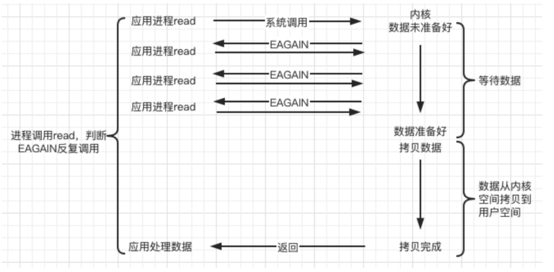
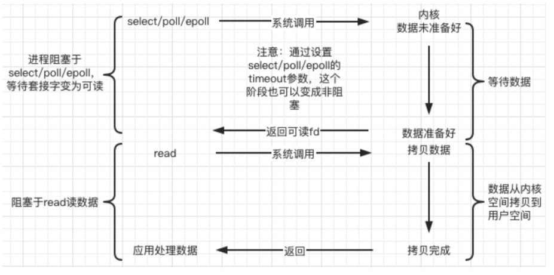
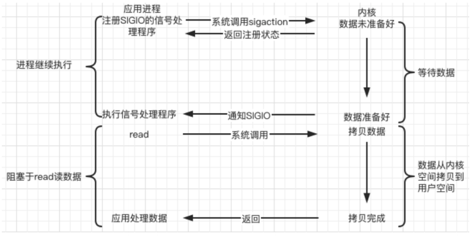

说明
本部分笔记及源码出自slide/05项目实战
阻塞/非阻塞 & 同步/异步
-
一个典型的网络IO接口调用，分为两个阶段，分别是
数据就绪和数据读写 -
数据就绪阶段分为阻塞和非阻塞 -
阻塞：阻塞当前线程，直到满足条件
-
非阻塞：直接返回，等满足条件时再通知
-
数据读写阶段分为同步和异步 -
同步：当A向B请求调用一个网络IO接口时(或者调用某个业务逻辑API接口时)，数据的读写都是由请求方A自己来完成的(不管是阻塞还是非阻塞)
-
异步：A向B请求调用一个网络IO接口时(或者调用某个业务逻辑API接口时)，向B传入请求的事件以及事件发生时通知的方式，A就可以处理其它逻辑了，当B监听到事件处理完成后，会用事先约定好的通知方式，通知A处理结果
-
小结
陈硕：在处理 IO 的时候，阻塞和非阻塞都是同步 IO，只有使用了特殊的 API 才是异步 IO

- 图示说明

sockfd对应操作系统中的TCP接收缓冲区-
recv默认阻塞，直到读到数据才往下执行，如果设置为非阻塞，那么就应该通过返回值判断size == -1：说明读取出错了，但有几种例外需要判断，如产生了EINTR(信号捕捉回收子进程资源时产生SIGCHLD导致这个信号)，EAGAIN/EWOULDBLOCK信号size == 0：读到文件末尾，即对方连接已关闭size > 0：读到了大小为size的数据
-
参考
- Linux中的EAGAIN含义
Unix/Linux上的I/O模型
阻塞(BIO, blocking)
- 调用者调用了某个函数，等待这个函数返回，期间什么也不做，不停的去检查这个函数有没有返回，必须等这个函数返回才能进行下一步动作

非阻塞(NIO, non-blocking)
- 非阻塞等待，每隔一段时间就去检测IO事件是否就绪，没有就绪就可以做其他事
- 非阻塞 I/O 执行系统调用总是立即返回，不管事件是否已经发生
- 若事件没有发生，则返回-1，此时可以根据
errno区分这两种情况，对于accept，recv和send，事件未发生时，errno通常被设置成EAGAIN

IO 复用(IO multiplexing)
- Linux 用
select/poll/epoll函数实现 IO 复用模型，这些函数也会使进程阻塞，但是和阻塞IO所不同的是这些函数可以同时阻塞多个IO操作 - 可以同时对多个读操作、写操作的IO函数进行检测。直到有数据可读或可写时，才真正调用IO操作函数

信号驱动(signal-driven)
- Linux 用套接口进行信号驱动 IO，安装一个信号处理函数，进程继续运行并不阻塞，当IO事件就绪，进程收到SIGIO 信号，然后处理 IO 事件
- 下图中，内核在第一个阶段是异步，在第二个阶段是同步
- 与非阻塞IO的区别在于它提供了消息通知机制，不需要用户进程不断的轮询检查，减少了系统API的调用次数，提高了效率

异步(asynchronous)
- Linux中，可以调用
aio_read函数告诉内核描述字缓冲区指针和缓冲区的大小、文件偏移及通知的方式，然后立即返回，当内核将数据拷贝到缓冲区后，再通知应用程序
/* Asynchronous I/O control block. */
struct aiocb {
int aio_fildes; /* File desriptor. */
int aio_lio_opcode; /* Operation to be performed. */
int aio_reqprio; /* Request priority offset. */
volatile void *aio_buf; /* Location of buffer. */
size_t aio_nbytes; /* Length of transfer. */
struct sigevent aio_sigevent; /* Signal number and value. */
/* Internal members. */
struct aiocb *__next_prio;
int __abs_prio;
int __policy;
int __error_code;
__ssize_t __return_value;
#ifndef __USE_FILE_OFFSET64
__off_t aio_offset; /* File offset. */
char __pad[sizeof (__off64_t) - sizeof (__off_t)];
#else
__off64_t aio_offset; /* File offset. */
#endif
char __glibc_reserved[32];
};